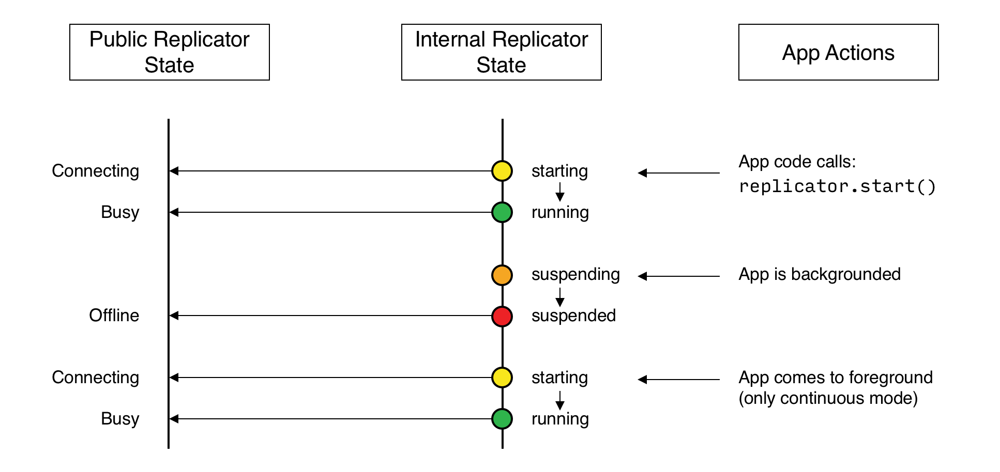

Active Peer
How to set up a replicator to connect with a listener and replicate changes using peer-to-peer sync
Android enablers
Allow Unencrypted Network Traffic
To use cleartext, un-encrypted, network traffic (http:// and-or ws://), include
android:usesCleartextTraffic="true" in the application element of the manifest as shown on
developer.android.com.
This not recommended in production.
Use Background Threads
As with any network or file I/O activity, Couchbase Lite activities should not be performed on the UI thread. Always use a background thread.
Code Snippets
All code examples are indicative only. They demonstrate the basic concepts and approaches to using a feature. Use them as inspiration and adapt these examples to best practice when developing applications for your platform.
Introduction
This is an Enterprise Edition feature.
This content provides sample code and configuration examples covering the implementation of Peer-to-Peer Sync over WebSockets. Specifically it covers the implementation of an Active Peer.
This active peer (also referred to as a client and-or a replicator) will initiate the connection with a Passive Peer (also referred to as a server and-or listener) and participate in the replication of database changes to bring both databases into sync.
Subsequent sections provide additional details and examples for the main configuration options.
Secure Storage
The use of TLS, its associated keys and certificates requires using secure storage to minimize the chances of a security breach. The implementation of this storage differs from platform to platform — see Using Secure Storage.
Configuration Summary
You should configure and initialize a replicator for each Couchbase Lite database instance you want to sync. Example 1 shows the initialization and configuration process.
Note
As with any network or file I/O activity, Couchbase Lite activities should not be performed on the UI thread. Always use a background thread.
Example 1. Replication configuration and initialization
val repl = Replicator(
// initialize the replicator configuration
ReplicatorConfigurationFactory.newConfig(
database = database,
target = URLEndpoint("wss://listener.com:8954"),
// Set replicator type
type = ReplicatorType.PUSH_AND_PULL,
// Configure Sync Mode
continuous = false, // default value
// Configure Server Authentication --
// only accept self-signed certs
acceptOnlySelfSignedServerCertificate = true,
// Configure the credentials the
// client will provide if prompted
authenticator = BasicAuthenticator("PRIVUSER", "let me in".toCharArray()),
conflictResolver = ReplicatorConfiguration.DEFAULT_CONFLICT_RESOLVER
)
)
// Optionally add a change listener
val token = repl.addChangeListener { change ->
val err: CouchbaseLiteException? = change.status.error
if (err != null) {
println("Error code :: ${err.code}\n$err")
}
}
// Start replicator
repl.start(false)
this.replicator = repl
this.token = token
- Configure how the client will authenticate the server. Here we say connect only to servers presenting a self-signed certificate. By default, clients accept only servers presenting certificates that can be verified using the OS bundled Root CA Certificates — see Authenticating the Listener.
- Configure the credentials the client will present to the server. Here we say to provide Basic Authentication credentials. Other options are available — see Example 7.
- Configure how the replication should perform Conflict Resolution.
- Initialize the replicator using your configuration object.
- Register an observer, which will notify you of changes to the replication status.
- Start the replicator.
Device Discovery
This phase is optional: If the listener is initialized on a well known URL endpoint (for example, a static IP address or well-known DNS address) then you can configure Active Peers to connect to those.
Prior to connecting with a listener you may execute a peer discovery phase to dynamically discover peers.
For the Active Peer this involves browsing-for and selecting the appropriate service using a zero-config protocol such as Network Service Discovery on Android or Bonjour on iOS.
Configure Replicator
In this section
Configure Target | Sync Mode | Retry Configuration |
Authenticating the Listener | Client Authentication
Configure Target
Initialize and define the replication configuration with local and remote database locations using the
ReplicatorConfiguration object.
The constructor provides:
- The name of the local database to be sync’d
- The server’s URL (including the port number and the name of the remote database to sync with)
It is expected that the app will identify the IP address and URL and append the remote database name to the URL endpoint, producing for example:wss://10.0.2.2:4984/travel-sample
The URL scheme for WebSocket URLs usesws:(non-TLS) orwss:(SSL/TLS) prefixes.
Note
On the Android platform, to use cleartext, un-encrypted, network traffic (http:// and-or ws://), include
android:usesCleartextTraffic="true" in the application element of the manifest as shown on
developer.android.com.
This not recommended in production.
Example 2. Add Target to Configuration
Note use of the scheme prefix (wss:// to ensure TLS encryption — strongly recommended in production — or ws://).
Sync Mode
Here we define the direction and type of replication we want to initiate.
We use ReplicatorConfiguration class’s type and isContinuous properties to tell the replicator:
- The type (or direction) of the replication:
PUSH_AND_PULL;PULL;PUSH - The replication mode, that is either of:
- Continuous — remaining active indefinitely to replicate changed documents (
isContinuous=true). - Ad-hoc — a one-shot replication of changed documents (
isContinuous=false).
- Continuous — remaining active indefinitely to replicate changed documents (
Example 3. Configure replicator type and mode
Tip
Unless there is a solid use-case not to, always initiate a single PUSH_AND_PULL replication rather than identical
separate PUSH and PULL replications.
This prevents the replications generating the same checkpoint docID resulting in multiple conflicts.
Retry Configuration
Couchbase Lite’s replication retry logic assures a resilient connection.
The replicator minimizes the chance and impact of dropped connections by maintaining a heartbeat; essentially pinging the listener at a configurable interval to ensure the connection remains alive.
In the event it detects a transient error, the replicator will attempt to reconnect, stopping only when the connection is re-established, or the number of retries exceeds the retry limit (9 times for a single-shot replication and unlimited for a continuous replication).
On each retry the interval between attempts is increased exponentially (exponential backoff) up to the maximum wait time limit (5 minutes).
The REST API provides configurable control over this replication retry logic using a set of configurable properties — see Table 1.
Table 1. Replication Retry Configuration Properties
Property |
Use cases | Description |
|---|---|---|
setHeartbeat() |
|
The interval (in seconds) between the heartbeat pulses. Default: The replicator pings the listener every 300 seconds. |
setMaxAttempts() |
Change this to limit or extend the number of retry attempts. | The maximum number of retry attempts
|
setMaxAttemptWaitTime() |
Change this to adjust the interval between retries. | The maximum interval between retry attempts While you can configure the maximum permitted wait time, the replicator’s exponential backoff algorithm calculates each individual interval which is not configurable.
|
When necessary you can adjust any or all of those configurable values — see Example 4 for how to do this.
Example 4. Configuring Replication Retries
Authenticating the Listener
Define the credentials your app (the client) is expecting to receive from the server (listener) in order to ensure that the server is one it is prepared to interact with.
Note that the client cannot authenticate the server if TLS is turned off. When TLS is enabled (listener’s default) the client must authenticate the server. If the server cannot provide acceptable credentials then the connection will fail.
Use ReplicatorConfiguration properties
setAcceptOnlySelfSignedServerCertificate and setPinnedServerCertificate, to tell the replicator how
to verify server-supplied TLS server certificates.
- If there is a pinned certificate, nothing else matters, the server cert must exactly match the pinned certificate.
- If there are no pinned certs and
setAcceptOnlySelfSignedServerCertificateistruethen any self-signed certificate is accepted. Certificates that are not self-signed are rejected, no matter who signed them. - If there are no pinned certificates and
setAcceptOnlySelfSignedServerCertificateisfalse(default), the client validates the server’s certificates against the system CA certificates. The server must supply a chain of certificates whose root is signed by one of the certificates in the system CA bundle.
Example 5. Set Server TLS security
Set the client to expect and accept only CA attested certificates.
// Configure Server Security
// -- only accept CA attested certs
acceptOnlySelfSignedServerCertificate = false,
This is the default. Only certificate chains with roots signed by a trusted CA are allowed. Self-signed certificates are not allowed.
Set the client to expect and accept only self-signed certificates.
// Configure Server Authentication --
// only accept self-signed certs
acceptOnlySelfSignedServerCertificate = true,
Set this to true to accept any self-signed cert. Any certificates that are not self-signed are rejected.
Set the client to expect and accept only a pinned certificate.
// Use the pinned certificate from the byte array (cert)
pinnedServerCertificate = TLSIdentity.getIdentity("Our Corporate Id")
?.certs?.firstOrNull()
?: throw IllegalStateException("Cannot find corporate id"),
Configure the pinned certificate using data from the byte array cert
Client Authentication
Here we define the credentials that the client can present to the server if prompted to do so in order that the server can authenticate it.
We use ReplicatorConfiguration's authenticator property to define the authentication
method to the replicator.
Basic Authentication
Use the BasicAuthenticator to supply basic authentication
credentials (username and password).
Example 6. Basic Authentication
This example shows basic authentication using username and password:
Certificate Authentication
Use the ClientCertificateAuthenticator to
configure the client TLS certificates to be presented to the server, on connection. This applies only to the
URLEndpointListener.
Note
The server (listener) must have isTlsDisabled set to false and have a ListenerCertificateAuthenticator configured, or it will never ask for this
client’s certificate.
The certificate to be presented to the server will need to be signed by the root certificates or be valid based on the
authentication callback set to the listener via ListenerCertificateAuthenticator.
Example 7. Client Cert Authentication
This example shows client certificate authentication using an identity from secure storage.
- Get an identity from secure storage and create a
TLSIdentityobject - Set the authenticator to
ClientCertificateAuthenticatorand configure it to use the retrieved identity
Initialize Replicator
Use the Replicator class’s Replicator(ReplicatorConfiguration) constructor, to initialize the replicator with the
configuration you have defined. You can, optionally, add a change listener (see Monitor Sync) before
starting the replicator running using start().
Example 8. Initialize and run replicator
// Create replicator
// Consider holding a reference somewhere
// to prevent the Replicator from being GCed
val repl = Replicator(
// initialize the replicator configuration
ReplicatorConfigurationFactory.newConfig(
database = database,
target = URLEndpoint("wss://listener.com:8954"),
// Set replicator type
type = ReplicatorType.PUSH_AND_PULL,
// Configure Sync Mode
continuous = false, // default value
// set auto-purge behavior
// (here we override default)
enableAutoPurge = false,
// Configure Server Authentication --
// only accept self-signed certs
acceptOnlySelfSignedServerCertificate = true,
// Configure the credentials the
// client will provide if prompted
authenticator = BasicAuthenticator("PRIVUSER", "let me in".toCharArray())
)
)
// Start replicator
repl.start(false)
this.replicator = repl
this.token = token
- Initialize the replicator with the configuration
- Start the replicator
Monitor Sync
In this section
Change Listeners | Replicator Status | Documents Pending Push
You can monitor a replication’s status by using a combination of Change Listeners and the
replicator.status.activityLevel property — seeactivityLevel. This enables you to know, for example, when the
replication is actively transferring data and when it has stopped.
Change Listeners
Use this to monitor changes and to inform on sync progress; this is an optional step. You can add a replicator change listener at any point; it will report changes from the point it is registered.
Tip
Don’t forget to save the token so you can remove the listener later
Use the Replicator class to add a change listener as a callback with
Replicator.addChangeListener() — see Example 9
. You will then be asynchronously notified of state changes.
You can remove a change listener with removeChangeListener(ListenerToken).
Using Kotlin Flows
Kotlin developers can take advantage of Flows to monitor replicators.
fun replChangeFlowExample(repl: Replicator): Flow<ReplicatorActivityLevel> {
return repl.replicatorChangesFlow()
.map { it.status.activityLevel }
}
Replicator Status
You can use the ReplicatorStatus class to check the replicator
status. That is, whether it is actively transferring data or if it has stopped — see Example 9.
The returned ReplicatorStatus structure comprises:
activityLevel—STOPPED,OFFLINE,CONNECTING,IDLE, orBUSY— see states described in Table 2progresscompleted— the total number of changes completedtotal— the total number of changes to be processed
error— the current error, if any
Example 9. Monitor replication
Replication States
Table 2 shows the different states, or activity levels, reported in the API; and the meaning of each.
Table 2. Replicator activity levels
State |
Meaning |
|---|---|
STOPPED |
The replication is finished or hit a fatal error. |
OFFLINE |
The replicator is offline as the remote host is unreachable. |
CONNECTING |
The replicator is connecting to the remote host. |
IDLE |
The replication caught up with all the changes available from the server. The IDLE state is only used in continuous replications. |
BUSY |
The replication is actively transferring data. |
Note
The replication change object also has properties to track the progress (change.status.completed and
change.status.total). Since the replication occurs in batches the total count can vary through the course of a
replication.
Replication Status and App Life Cycle
iOS
The following diagram describes the status changes when the application starts a replication, and when the application is being backgrounded or foregrounded by the OS. It applies to iOS only.

Additionally, on iOS, an app already in the background may be terminated. In this case, the Database and Replicator
instances will be null when the app returns to the foreground. Therefore, as preventive measure, it is recommended to
do a null check when the app enters the foreground, and to re-initialize the database and replicator if any of those
are null.
On other platforms, Couchbase Lite doesn’t react to OS backgrounding or foregrounding events and replication(s) will continue running as long as the remote system does not terminate the connection and the app does not terminate. It is generally recommended to stop replications before going into the background otherwise socket connections may be closed by the OS and this may interfere with the replication process.
Other Platforms
Couchbase Lite replications will continue running until the app terminates, unless the remote system, or the application, terminates the connection.
Note
Recall that the Android OS may kill an application without warning. You should explicitly stop replication processes
when they are no longer useful (for example, when the app is in the background and the replication is IDLE) to
avoid socket connections being closed by the OS, which may interfere with the replication process.
Documents Pending Push
Tip
Replicator.isDocumentPending() is quicker
and more efficient. Use it in preference to returning a list of pending document IDs, where possible.
You can check whether documents are waiting to be pushed in any forthcoming sync by using either of the following API methods:
- Use the
Replicator.getPendingDocumentIds()method, which returns a list of document IDs that have local changes, but which have not yet been pushed to the server.
This can be very useful in tracking the progress of a push sync, enabling the app to provide a visual indicator to the end user on its status, or decide when it is safe to exit. - Use the
Replicator.isDocumentPending()method to quickly check whether an individual document is pending a push.
Example 10. Use Pending Document ID API
val repl = Replicator(
ReplicatorConfigurationFactory.newConfig(
database = database,
target = URLEndpoint("ws://localhost:4984/mydatabase"),
type = ReplicatorType.PUSH
)
)
val pendingDocs = repl.getPendingDocumentIds()
// iterate and report on previously
// retrieved pending docIds 'list'
if (pendingDocs.isNotEmpty()) {
println("There are ${pendingDocs.size} documents pending")
val firstDoc = pendingDocs.first()
repl.addChangeListener { change ->
println("Replicator activity level is ${change.status.activityLevel}")
try {
if (!repl.isDocumentPending(firstDoc)) {
println("Doc ID $firstDoc has been pushed")
}
} catch (err: CouchbaseLiteException) {
println("Failed getting pending docs\n$err")
}
}
repl.start()
this.replicator = repl
}
Replicator.getPendingDocumentIds()returns a list of the document IDs for all documents waiting to be pushed. This is a snapshot and may have changed by the time the response is received and processed.Replicator.isDocumentPending()returnstrueif the document is waiting to be pushed, andfalseotherwise.
Stop Sync
Stopping a replication is straightforward. It is done using stop(). This initiates an asynchronous operation and so is not
necessarily immediate. Your app should account for this potential delay before attempting any subsequent operations.
You can find further information on database operations in Databases.
Here we initiate the stopping of the replication using the stop() method. It will stop any active change listener
once the replication is stopped.
Conflict Resolution
Unless you specify otherwise, Couchbase Lite’s default conflict resolution policy is applied — see Handling Data Conflicts.
To use a different policy, specify a conflict resolver using conflictResolver as shown in Example 12.
For more complex solutions you can provide a custom conflict resolver - see Handling Data Conflicts.
Example 12. Using conflict resolvers
val mergeConflictResolver: ConflictResolver = { conflict ->
val localDoc = conflict.localDocument?.toMap()?.toMutableMap()
val remoteDoc = conflict.remoteDocument?.toMap()?.toMutableMap()
val merge: MutableMap<String, Any?>?
if (localDoc == null) {
merge = remoteDoc
} else {
merge = localDoc
if (remoteDoc != null) {
merge.putAll(remoteDoc)
}
}
if (merge == null) {
MutableDocument(conflict.documentId)
} else {
MutableDocument(conflict.documentId, merge)
}
}
config.conflictResolver = mergeConflictResolver
Just as a replicator may observe a conflict — when updating a document that has changed both in the local database and
in a remote database — any attempt to save a document may also observe a conflict, if a replication has taken place
since the local app retrieved the document from the database. To address that possibility, a version of the
Database.save() method also takes a conflict resolver as shown
in Example 13.
The following code snippet shows an example of merging properties from the existing document (curDoc) into the one
being saved (newDoc). In the event of conflicting keys, it will pick the key value from newDoc.
Example 13. Merging document properties
val mutableDocument = database.getDocument("xyz")?.toMutable() ?: return
mutableDocument.setString("name", "apples")
database.save(mutableDocument) { newDoc, curDoc ->
if (curDoc == null) {
return@save false
}
val dataMap: MutableMap<String, Any?> = curDoc.toMap().toMutableMap()
dataMap.putAll(newDoc.toMap())
newDoc.setData(dataMap)
true
}
For more on replicator conflict resolution see Handling Data Conflicts.
Delta Sync
If delta sync is enabled on the listener, then replication will use delta sync.